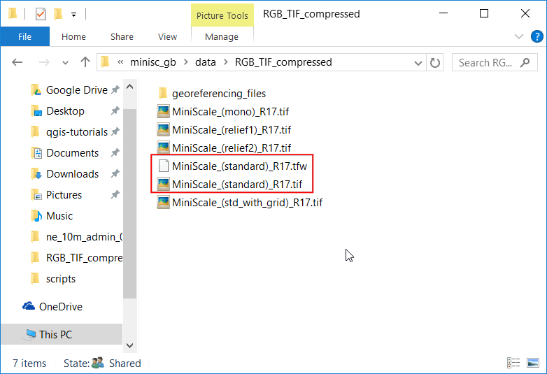
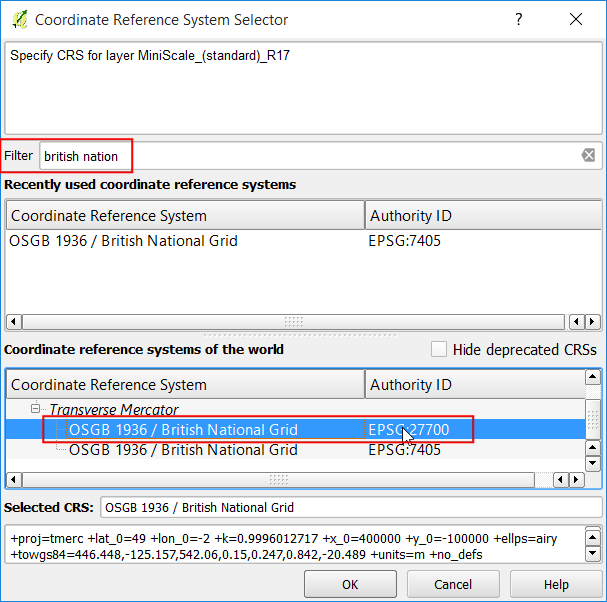

Working with Projections
[ Download PDF
A4
Letter ]
Map projections - or Coordinate Reference System (CRS) - often cause a lot of
frustration when working with GIS data. But proper understanding of the
concepts and access to the right tools will make it much easier to deal with
projections. In this tutorial, we will explore how projections work in QGIS and
learn about tools available for vector and rasters - particularly re-projecting
vector and raster data, enabling on-the-fly re-projection and assigning
projection to data without projection.
Overview of the task
The task is to re-project and overlay data layers of difference projections
together in QGIS.
Other skills you will learn
- Use .tfw files to georeference to rasters.
- How to save selected features from a layer to a new layer.
- How to view metadata information for layers in QGIS.
Procedure
- Open QGIS. Go to .

- Browse to the downloaded ne_10m_admin_0_countries.zip file and click
Open.

- At the bottom of QGIS window, you will notice the label
Coordinate. As you move your cursor over the map, it will show
you the X and Y coordinates at that location. At the bottom-right corner you
will see EPSG:4326. This is the code for the current CRS
(Projection) for the project.

- As you will later see, the project’s CRS may not match the layer’s CRS. To
determine a layer’s projection, we can look into the metadata. Right click
on ne_10m_admin_0_countries layer and select Properties.

- Switch to the Metadata tab in the Layer Properties
dialog. Expand the Properties section. At the bottom, you will
see the definition for the projection under Layer Spatial
Reference System. This definition is in the PROJ.4 format.

- Now let’s see how we can change the layer’s projection. This operation is
called Re-Projection. Rather than re-projecting the entire layer, we can
also re-project some features from the layer. Use the Select
features by area or single click tool and click on United States feature to
select it.

- Right-click the ne_10m_admin_0_countries layer and select
Save As.

- In the Save vector layer as... dialog, name the output layer as
united_states.shp. Also check the Save only selected
features box. This will ensure that only the selected feature gets
re-projected and exported. Next, we choose the new projection for the layer.
Click on the Select CRS button.

- In the Coordinate Reference System Selector dialog, enter
north america in the Filter search box. Scroll through the
results and select North_America_Albers_Equal_Area_Conic (EPSG:102008)
projection and click OK.
Nota
We choose Albers Equal Area Conic projection for this tutorial as it is a
popular projection choice for thematic maps of the US. The choice of
projection for your particular use-case will depend on a lot of factors. See
this guide
for a good overview of Projections.

- You will see the new CRS selected in the Save vector layer
as... dialog. Click OK.

- Once the re-projected layer gets loaded, you will notice that the new
united_states layer overlays perfectly on top of
ne_10m_admin_0_countries layer - even though they are in different
projections. This is because QGIS has a feature called On-the-fly CRS
transformation. The projection text at the bottom-right of QGIS now has
the words OTF next the EPSG:4326`. To learn more, let’s
explore the CRS option in QGIS.

- Go to .

- Switch to the CRS tab in the Options dialog. You
will see that the default is Automatically enable ‘on the fly’
reprojection if the layers have different CRS. This means that when QGIS
detects that you have loaded layers with different CRS, it will
automatically re-project them back to a common CRS so they line up with
each other. Click OK.

- Let’s turn-off the On-the-fly CRS transformation and see what happens.
Click on the Current CRS text at the bottom-right corner.

- In the Project Properties dialog, un-check the
Enable ‘on the fly’ CRS transformation box and click
OK.

- Back in the main QGIS window, you will see the nice world map disappear.
This is because the Project CRS changed to
North_America_Albers_Equal_Area_Conic and the coordinates and scale are
different now. Right-click the united_states layer and select
Zoom to Layer.

- Now you will see the United States in the selected projection. Notice that
the features from ne_10m_admin_0_countries do not appear on the canvas
as they are in a different coordinate space than the united_states
layer. Go back to the Project Properties dialog and turn-on the
Enable ‘on the fly’ CRS transformation option for the remainder
of the tutorial.

- Now let’s switch gears and add a raster layer to our project. Browse to the
directory where you had extracted the minisc_gb.zip file. Locate the
RGB_TIF_COMPRESSED folder containing tif files. You will notice that
the .tif image files are plain TIF files, not GeoTIFF files. That means
they do not have any projection information. To use these images
in a GIS, you need to georeference them. A georeference contains 2 types of
information - image extents and projection. Typically, the extents are
stored in a file known as World file and they have extensions like
.tfw or .jgw. Most GIS software, including QGIS would be able to
use information stored in the world files as long as they are stored in the
same directory as the original image and has the same name. The .tfw
files for the MiniScale raster files are in a separate folder named
georeferencing_files.

- Go to the ESRI_TFW_FILES folder within georeferencing_files. The
.tfw files are plain text files. Open one of the .tfw files in a
text editor.

- The world files contain 6 lines with some numbers. As explained below, each
line signifies some information about the raster file. Knowing this format
is useful because some data do not come with the world files and you may
have to create these by hand using the supplied information.
Line 1: A: pixel size in the x-direction in map units/pixel
Line 2: D: rotation about y-axis
Line 3: B: rotation about x-axis
Line 4: E: pixel size in the y-direction in map units
Line 5: C: x-coordinate of the center of the upper left pixel
Line 6: F: y-coordinate of the center of the upper left pixel

- Copy the MiniScale_(standard)_R17.tfw file from the
georeferencing_files folder to the RGB_TIF_COMPRESSED folder. This
way the .tfw and the .tif files are in the same directory and QGIS
can use the information.

- In the QGIS main windows, go to . Browse to the MiniScale_(standard)_R17.tif file and
click Open.

- The Ordnance Survey files are in the British National Grid projection. In
the Coordinate Reference System Selector dialog, search for
british national and pick the OSGB 1936 / British National Grid
(EPSG:27700) CRS. Click OK.

- Once the MiniScale_(standard)_R17 layer is loaded, right-click on it
and select Zoom to layer.

- You will see the raster layer overlaid on top of the
ne_10m_admin_0_countries vector layer. Since we have the OTF
enabled with EPSG:4326, the MiniScale_(standard)_R17 layer gets
dynamically reprojected to EPSG:4326 and shown in the same coordinate space
as the other layer.